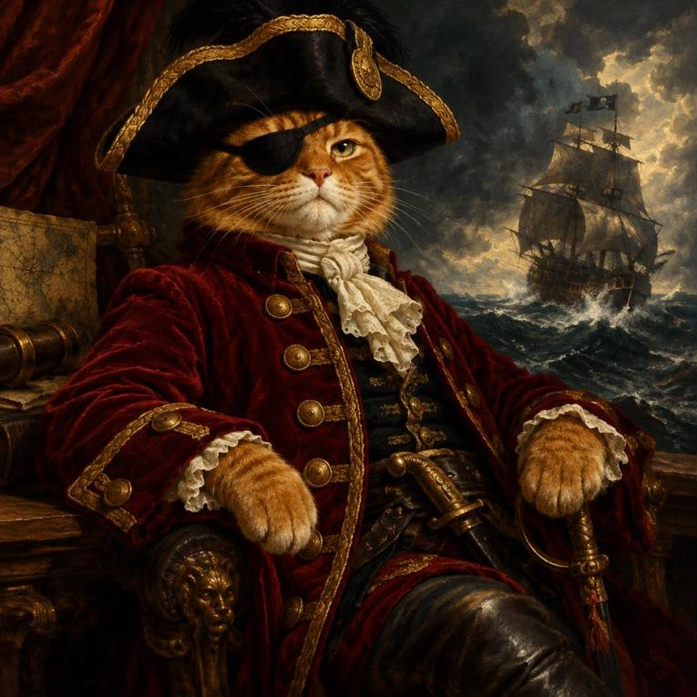
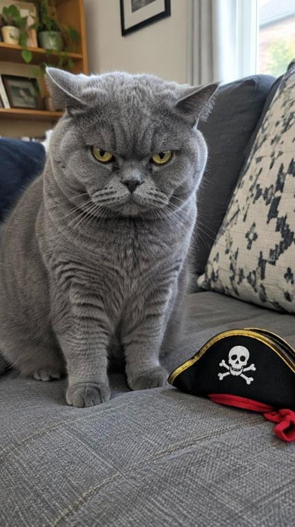
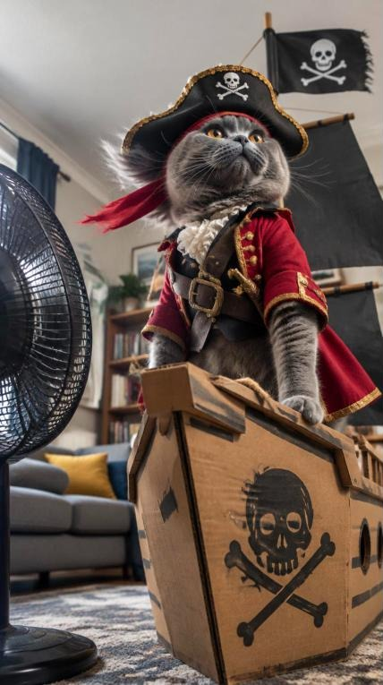

Worked example · Facebook Ads Live Build
Purrates
Pirate costumes for cats who mean business.
Every slide in the live build asked you a question. This deck answers all of them for one ridiculous brand, from blank page to Facebook Reels ad.
A fictional brand for demonstration. Images made with Higgsfield. Demo figures are labelled.
How to use this deck
Every ask in the live build, answered for one silly brand.
The ask
The question the slide asked the room
Shown small, at the top of every slide.
Our answer
What Purrates wrote
Big, specific and as funny as the brand allows.
Your turn
Swap the cat for your business
Same prompt, same skill, your brand.
If it works for pirate costumes for cats, it works for you.
02 · Purrates is a fictional brand for demonstration
Part 01 · Brand kit
Arrr-ticulate the brand.
Before a single ad: who are Purrates, what do they stand for, and how do they sound?
The ask: eight questions before you write a single ad
The Purrates brand kit, on one page.
Purpose
Every cat is already plotting a mutiny. We just give them the outfit.
Values
Comfort before costume. The cat decides. Ridiculous on purpose.
Position
The pirate costume cats actually tolerate.
Audience
Jen, 34. Two cats, one group chat, zero chill about Halloween.
Tone of voice
Pirate, with cat puns. Salty, never sour. Purr-fectly ridiculous.
Visual identity
Treasure gold on Jolly Roger black. Cats shot like naval portraits.
Proof
Tested on a crew of rescue cats. Mutinies logged and reported.
Offer
From £24. Walk-the-Plank Guarantee: hated it? Send it back.
04 · Purrates is a fictional brand for demonstration
The ask: what changes in the world because you exist?
Every cat is already plotting a mutiny. We just give them the outfit.
The drafts we threw overboard
Rejected: “Empowering pets to express themselves.” Banned word. Also, cats are already empowered.
Rejected: “Quality costumes for every pet.” Could be anyone’s. Fails the steal test.
The winner: true about cats, a little bit villainous, nobody else could say it.
05 · Purrates is a fictional brand for demonstration
The ask: three things you’d lose a sale to protect
Values that cost us something.
Comfort before costume
No elastic round the neck. Ever. We’d lose a sale before we’d lose a whisker.
Cost: our cheapest option is £24, not £4.
The cat decides
Every piece has a 3-second Mutiny Release. If the cat says no, it’s no.
Cost: fewer “stays on all night” claims.
Ridiculous on purpose
We take comfort seriously. Nothing else. If it isn’t funny, it doesn’t ship.
Cost: we will never be a luxury brand.
06 · Purrates is a fictional brand for demonstration
The ask: fill in the blanks, then try to steal it
For cat owners who want the photo of the year but own a tiny tyrant, Purrates is the pirate costume brand that cats actually tolerate, unlike the £4 party-shop costume that ends up in the bin, because every piece is soft-lined and comes off in 3 seconds.
The steal test: pass
A generic pet brand can’t claim “cats actually tolerate” without the Mutiny Release to prove it.
The enemy test: pass
Our enemy is the itchy £4 costume. Every cat owner has bought one. Every cat has destroyed one.
07 · Purrates is a fictional brand for demonstration
The ask: how tired is your market of hearing it?
Every pet costume says “cute and comfy”. We’re at stage 3.
1
First claim
2
Bigger claim
3
New mechanism
Our lead: the Mutiny Release
4
Better mechanism
5
Identity
Our twist: cats with a criminal record
From the Meta Ad Library (demo): five pet costume ads, all “adorable”, “cosy” or “cute”. Nobody names how it stays comfortable. So we lead with the mechanism and season it with identity.
08 · Eugene Schwartz, Breakthrough Advertising · Ad Library finding is illustrative
The ask: one person, described like a friend
Meet Jen, 34. Halloween is her Super Bowl.
Two cats: Biscuit (chaos) and Sir Reginald (disdain). A normal Tuesday: works in HR, posts her cats more than herself, buys gifts on Etsy at 11pm.
Has tried: a £4 bumblebee costume. Lasted four seconds. The only photo is a blur and a hiss.
Her words: “I just want ONE photo where he doesn’t look like he’s plotting my death.”
Pain, Urgent, Pay
Pain: yes. Group-chat envy.
Urgent: weakest. Only in October.
Pay: yes. £24 is a takeaway.
So: launch for Halloween, then sell birthdays and Christmas cards.
09 · Purrates is a fictional brand for demonstration
The ask: set the four tone dials on purpose
Pirate. With cat puns. Purr-manently.
Funny ●○○○○ Serious
Casual ●○○○○ Formal
Irreverent ○●○○○ Respectful
Enthusiastic ●○○○○ Matter-of-fact
We are salty, never sour.
We are cheeky, never cruel to cats.
We are fluffy, never flimsy.
Before
“Our pet costumes are high quality and comfortable.”
After
“Arrr. Soft enough for a nap, fierce enough for a meow-tiny.”
Pun bank: purr-fect, paws for thought, fur real, claws for celebration, meow-tiny, the seven sofas, Captain Whiskers.
10 · Tone dimensions after Nielsen Norman Group · Purrates is a fictional brand
The ask: colours, type, photo style, logo rules
Cats shot like naval portraits.
Jolly Roger
#16120F
Treasure
#F2B632
Captain’s coat
#9E1B23
Sea salt
#F6EFE2
Purrates · Headlines in Pirata One
Body in Google Sans. Photos: one cat, one costume, dramatic light, never a cartoon. Never: a cat that looks scared, cheap plastic, or skull imagery that reads as horror.
11 · Image generated with Higgsfield · Purrates is a fictional brand
The ask: proof and offer · what they get, what it costs, why now
Add value. Never walk the price plank.
The Captain · £24
Tricorn hat and eyepatch. Soft-lined. Mutiny Release velcro.
The Full Plunder · £39
Hat, coat and a free “WANTED” poster printed with your cat’s face.
Walk-the-Plank Guarantee
Cat hates it? Send it back within 30 days. No questions, no hissing.
Why now: Halloween orders close 24 October, because the printing takes a week. A real deadline, not a fake countdown.
Proof we still need: real customer photos. Until then: “[REAL REVIEW HERE]”. Never invent reviews, even for pirates.
12 · Value equation after Alex Hormozi · Prices and dates are illustrative
The ask: transformation statement and social pitch
From… to…
From “my cat ignores me” to “my cat is a legend of the seven seas, and the group chat”.
Name
We’re Purrates.
Same
We make pet costumes.
Fame
The only ones tested by a crew of rescue cats. [Real number here.]
Pain
Most cat costumes last seconds and end up in the bin.
Aim
Right now we’re focused on Halloween.
Game
We believe every cat deserves a backstory.
13 · Social Pitch after Daniel Priestley · Purrates is a fictional brand
Part 02 · Insight
Data says cats hate costumes.
Insight says they hate bad ones.
The ask: data, insight, execution (the Dove test)
Cat owners don’t want cute. They want the villain.
Data
The top comments under pet costume ads: “mine would destroy this”, “he looks like he’s planning revenge”, “this is the most he’s ever loved me”. (Illustrative)
Insight
Owners already believe their cat is a tiny, scheming villain. Cute costumes fight that. Pirate costumes confirm it.
Execution
Treat every cat like a feared captain, never a toy. Write the ads the way a sea shanty describes its villain.
On Facebook
Frame one: a cat in a tricorn hat, glaring. No product shot needed.
15 · Comment examples are illustrative · Purrates is a fictional brand
The ask: which human needs do you really serve?
It’s not about the cat. It’s about the group chat.
Life-Force 8 · no. 8
Social approval
The photo everyone reacts to. Tension: her cat refuses to co-operate.
Life-Force 8 · no. 6
To be superior
Best-dressed pet at the Halloween party. Tension: the dog next door always wins.
Learned want
Convenience
On in 3 seconds. Paired with social approval: “the photo, before the escape”.
16 · Life-Force 8: Drew Eric Whitman, Cashvertising · Purrates is a fictional brand
The ask: three insights with tension in them
I want… but… because… So our ad should…
1
“I want a funny photo of my cat, but she rips every costume off, because they’re tight and she’s a tyrant.” So our ad should show a tyrant who chose to keep it on.
2
“I want to dress him up, but I feel guilty, because I don’t want him stressed.” So our ad should show a cat asleep in the costume, completely unbothered.
3
“I want people to get how ridiculous she is, but cute costumes make her look sweet, because that’s all anyone sells.” So our ad should cast her as the villain.
17 · Purrates is a fictional brand for demonstration
The ask: what 10 beliefs must they hold to buy from you?
Every missing belief is a headline.
| Belief Jen needs | Holds it? | Headline that installs it |
|---|---|---|
| My cat secretly loves attention | Yes | (Already true. Use it.) |
| A costume can be comfortable for a cat | No | “Soft enough for a nap. Fierce enough for a meow-tiny.” |
| My cat won’t rip it off in 4 seconds | No | “Stays on long enough for the photo. Comes off in 3 seconds.” |
| If she hates it, I’m not stuck with it | No | “Cat hates it? Make it walk the plank. Full refund.” |
| £24 is worth it for one photo | Unsure | “Cheaper than the therapy after the bumblebee costume.” |
| It’ll arrive before Halloween | Unsure | “Order by 24 October. Sails in time.” |
18 · 10 beliefs prompt after Daniel Priestley · showing 6 of 10 · Purrates is a fictional brand
Part 03 · Facebook statics
Static first.
Video second.
Three angles, one frame each, made with Claude and Higgsfield.
The ask: set Facebook up to find your people
Let the creative find the cat people.
| Setting | Purrates choice |
|---|---|
| Objective | Sales (purchases on the website) |
| Audience | Broad: UK, 22 to 55. No interest targeting. The cat photo does the targeting. |
| Placements | Advantage+ (feed, Stories, Reels) |
| Creative | Three genuinely different angles, not three button colours |
| Tracking | Meta Pixel and Conversions API, purchase event |
| Budget | £30 a day for the first round [illustrative] |
20 · Check Meta’s current guidance · Purrates is a fictional brand
The ask: 20 hooks before you judge one
Twelve of our twenty. The top three are gold.
1 · Your cat isn’t cute. Your cat is a pirate.
2 · Finally, a costume your cat won’t remove in 4 seconds.
3 · Dogs get dressed up. Cats get promoted to Captain.
Your cat was a pirate in a past life. Now it has the hat.
He knocked your mug off the table. Let him do it in style.
Wanted: one very bad cat. Reward: the photo of the year.
Arrr you kitten me? Pirate costumes from £24.
Comfort first. Plunder second.
The only outfit your cat will let you choose.
Soft enough for a nap. Fierce enough for a meow-tiny.
The seven seas? She rules the seven sofas.
Cat hates it? It walks the plank. Full refund.
21 · Ranked on evidence, not taste · Purrates is a fictional brand
The ask: three Facebook feed ads, one per angle
Round 1: same budget, three angles.
22 · Angle 1 Identity · Angle 2 Objection killer · Angle 3 Us vs them · Images: Higgsfield · Fictional brand
The ask: would Facebook reject this?
Joke about the cat. Never about the viewer.
Rejected: “Lonely? Your cat could be your first mate.”
Approved: “Every captain needs a first mate.”
Rejected: “Skint after payday? Costumes from £24.”
Approved: “Costumes from £24. Treasure not included.”
Rejected: “Hurry! Only 3 left!” (when there are 3,000)
Approved: “Order by 24 October to sail in time for Halloween.”
23 · Meta personal attributes rule · check Meta’s current Advertising Standards
The ask: a carousel that earns the swipe, shaped with HSTSS
Six cards. One villain origin story.
1 · Hook
Your cat isn’t cute.
2 · Stakes
You’ve seen how she looks at the goldfish. She has plans.
3 · Turn
She was never a princess. She was always a pirate.
4 · Scene
Tricorn hat. Velvet coat. Glaring from the sofa like it’s a galleon.
5 · Shatter + offer
Soft-lined, off in 3 seconds. From £24. Walk-the-Plank Guarantee.
6 · Repeat the hook
Your cat is a pirate.
Card headlines (under 40 characters): “Meet your captain” · “Shop The Captain” · “Shop The Full Plunder”. Primary text above: “Every cat has a villain origin story. Swipe for hers.”
24 · HSTSS: Hook, Stakes, Turn, Scene, Shatter (Vishen Lakhiani) · Fictional brand
The ask: one angle, three narratives
Angle 2, told three ways.
Problem, Agitate, Solve
Last Halloween’s costume lasted four seconds. The only photo is a blur, a hiss and a bin bag. Purrates: soft-lined, off in 3 seconds, on long enough for the photo.
Before, After, Bridge
Before: a cat who treats costumes as an act of war. After: a captain asleep in his coat. Bridge: no neck elastic and a 3-second Mutiny Release.
Pope in the Pool
The boring bit (how to measure your cat) read aloud by “Captain Whiskers” in full pirate voice while he tries to eat the tape measure.
25 · Pope in the Pool: Blake Snyder, Save the Cat · Fictional brand
The ask: lead ad form and the follow-up email
Capture the crew. Then write to them like a pirate.
Lead form: 3 questions
Name · Email (pre-filled)
What’s your cat’s pirate name?
Thank-you screen: “Welcome aboard, Captain [cat’s name]. Your 10% treasure code is on its way.”
Five subject lines
Curiosity: Captain Biscuit has a request
Benefit: The costume she won’t mutiny against
Question: Is your cat secretly a pirate?
Number: 3 seconds. That’s the escape plan.
Personal: Jen, your first mate has spoken
P.S. Halloween orders close 24 October. Captain’s orders.
26 · Fictional brand · the pirate-name question doubles as personalisation for every email after
The ask: read the results and back the winning horse
Round 1 result: the villain wins.
| Ad (angle) | CPM | Link CTR | Cost per sale | Tier |
|---|---|---|---|---|
| 1 · Your cat isn’t cute | £7.10 | 2.4% | £6.10 | Gold |
| 3 · Dogs vs Captain | £6.80 | 2.9% | £9.40 | Silver |
| 2 · Won’t remove in 4 seconds | £7.30 | 1.1% | £14.80 | Bronze |
The finding
Gold casts the cat as a villain, which makes owners feel seen. Bronze talks about escaping, which makes them picture a cat that hates it.
Next round
Lock “Your cat isn’t cute”. Test three visuals. Ad 3 got clicks but not sales: the dog joke stops thumbs, the page doesn’t pay it off.
27 · DEMO DATA, invented to show the method · Gold, silver, bronze adapted from Hook Point
Part 04 · Video
Back the winning horse.
It’s a cat.
“Your cat isn’t cute” becomes a 15-second Reels ad.

0 to 3s

6 to 11s
The ask: a 15-second Reels ad, shaped with HSTSS
0–3s
Hook. Grumpy cat, untouched hat. Caption: “This cat has never worn a costume.”
3–6s
Stakes. A hand creeps in with the hat. The cat’s eyes narrow. Ominous cello.
6–11s
Turn and Scene. Cut: full captain’s coat, cardboard galleon, desk fan in the fur, sea shanty kicks in.
11–13s
Shatter. “Turns out she wasn’t grumpy. She was under-dressed.”
13–15s
CTA. “Your cat isn’t cute. Your cat is a pirate. From £24.” Shop now.
29 · Frames generated with Higgsfield · 9:16 Reels, 4:5 crop for feed · captions on, because sound is off
The ask: AI shot prompts and five hooks to test
The prompts we fed Higgsfield, and the next test.
Shot 1 · 0 to 3s
Vertical phone video: a very grumpy British shorthair glaring at the camera from a sofa, ears slightly back, a tiny pirate hat lying untouched beside it. Natural home light, realistic, 5 seconds.
Shot 3 · 6 to 11s
Same cat in a tricorn hat and red coat on a cardboard pirate ship, fur blowing from a desk fan, heroic low angle, slow push in. Same sofa, same light.
Hook test: one variable
Question: Is your cat secretly a pirate?
Bold claim: This is the only costume she’s ever kept on.
Visual surprise: Open on the galleon.
Problem: Last year’s costume: 4 seconds.
Curiosity gap: We put a hat on a tyrant. Watch.
30 · Judge hooks on hook rate: 3-second plays ÷ impressions · Fictional brand
The finished ad · 15 seconds · 9:16
From storyboard to Reel
in in 30mins
0–3s Hook: “This cat has never worn a costume.”
3–6s Stakes: the hand, the hat, the squint.
6–11s Turn and scene: captain’s coat, galleon, sea shanty.
11–15s Shatter and CTA: “Your cat is a pirate.” From £24.
Three Kling 3.0 shots generated in Higgsfield from the storyboard frames, cut and captioned in one edit.
31 · Video: Higgsfield (Kling 3.0) · Tap the video for sound · Fictional brand
Black Friday · Pope in the Pool · 84 seconds
The Legend of the Black Pur
Bury the ad inside a story. They think they’re learning how Black Friday got its name. They’re actually watching the whole range.
Story 1726. Mittens knocks the Admiral’s candle off the table. The Black Pur goes down in black smoke.
Hidden ad Every character wears a different costume. “Not one costume was lost.”
Payoff “Historians are dogs.” Then: 40% off the whole fleet.
32 · Frames: GPT Image 2.5 · Video: Kling 3.0 · Voice: Arthur · All in Higgsfield · Tap the video for sound · Offer is a placeholder · Fictional brand
Black Friday, the alternative · Collaborate, don’t discount
Stack value. Don’t cut price.
Purrates
The Captain costume
£24 · what you pay
+
Tuna Republic
Cat food feast box
worth £12 · free
+
The Fluffery
Grooming pamper kit
worth £15 · free
=
£51
of loot for £24
The Facebook ad
This Black Friday, every Purrates costume comes with a feast from Tuna Republic and a pamper kit from The Fluffery. Dressed. Fed. Fluffed.
Headline: £51 of loot for £24 · Ends Monday
The mirror: Tuna Republic and The Fluffery run the same bundle, with a Purrates bandana inside theirs.
Why it beats 40% off
Margin stays whole. Price isn’t trained down for next year.
Three lists, three audiences, one offer, emailed by all three brands.
The gifts are samples: cheap for partners, and each one wins them a new customer.
33 · After Hormozi’s value equation · Prize draws: buy-to-enter usually needs a free entry route · Fictional partners
The ask: turn your brand kit into a skill
We built a Purrates skill. Now every ad sounds like us.
purrates-copywriter
Brand kit, voice rules, pun bank (one pun per line, max), offer and deadline, the three insights, the winning angle, and the Facebook policy check.
Ask it
“Write five Facebook hooks for the Christmas card shoot.”
“Your cat’s Christmas card, but make it a WANTED poster.”
Why a skill
You stop re-explaining your brand. Your team gets the same voice. The AI checks policy before you do.
34 · Your version: run the brand kit skill, then ask Claude to save the result as a skill
The ask: what do you hand to AI? (skill × enjoyment)
We kept the taste. The AI swabbed the deck.
Do it ourselves
The insight, the joke, picking the winner.
Collaborate with AI
Hooks, scripts, carousel copy, email.
Learn with AI
Reading Ads Manager. Setting up the Pixel.
Automate
Image generation, resizing, captions, the weekly results summary.
35 · Skill × enjoyment after Domenic Ashburn · Fictional brand
Your turn.
Swap the cat for your business.
Same eight questions. Same three insights. Same horse race. Probably fewer hats.
Prompts and skills: garethwinter-cpu.github.io/facebook-ads-live-build